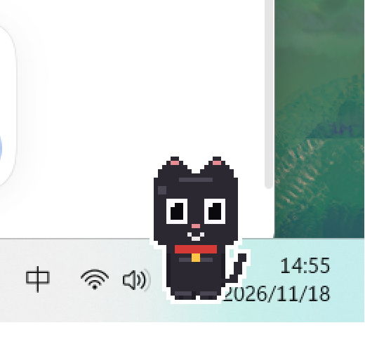

张雨 · 桌面小工具
一只住在桌面上的像素猫
你打字它踩奶，打太快它过热冒蒸汽，鼠标划过它会去追；右键能开番茄钟、提醒你喝水。 纯 C#，一个 60KB 的 exe，免安装、不联网、不写系统目录。
解压后双击 MiaoBan.exe；单文件约 70KB，不需要 .NET 之外的运行库。

它会做什么
| 行为 | 触发 | 说明 |
|---|---|---|
| 踩奶 / 敲键盘 | 你打字 | 爪子底下浮一个小键盘，左右爪交替 |
| 过热 | 连续快速输入约 1.4 秒 | 变红、头顶冒像素蒸汽 |
| 追鼠标 | 右键 / 鼠标快速划过 | 压低身子追你的光标 |
| 摸头 | 左键单击 | 眯眼笑、冒爱心、气泡「喵~」 |
| 番茄钟 / 提醒 | 右键菜单 | 专注 25 分钟、喝水、久坐提醒 |
| 拖拽 | 按住拖 | 像麻薯一样拉长，松手回弹 |
分层窗口 + 逐像素透明UpdateLayeredWindow + DIB section，自己做 alpha 预乘，形状边缘没有白边。
不抢焦点WM_MOUSEACTIVATE → MA_NOACTIVATE，点猫不会打断你打字。
零第三方依赖只用 .NET Framework 自带的 WinForms + GDI+，60KB 一个 exe。
边界：只做了 Windows；声音（呼噜）没有；自定义花纹只做了一半。功能进度见仓库里的 README，与同类产品的逐条对照也写在里面。